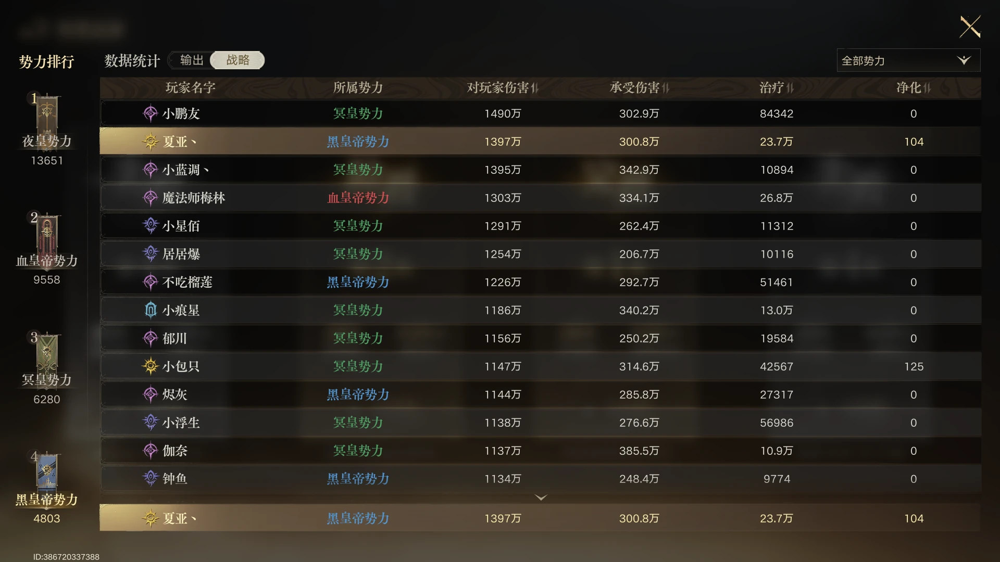
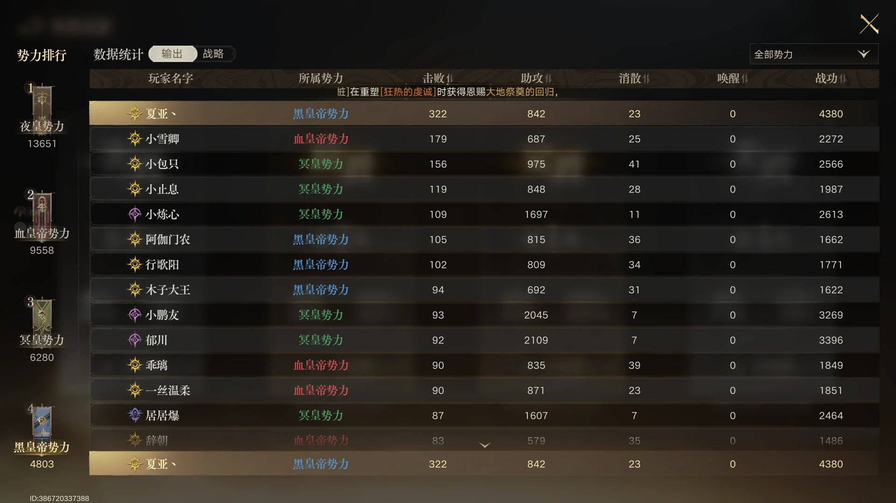
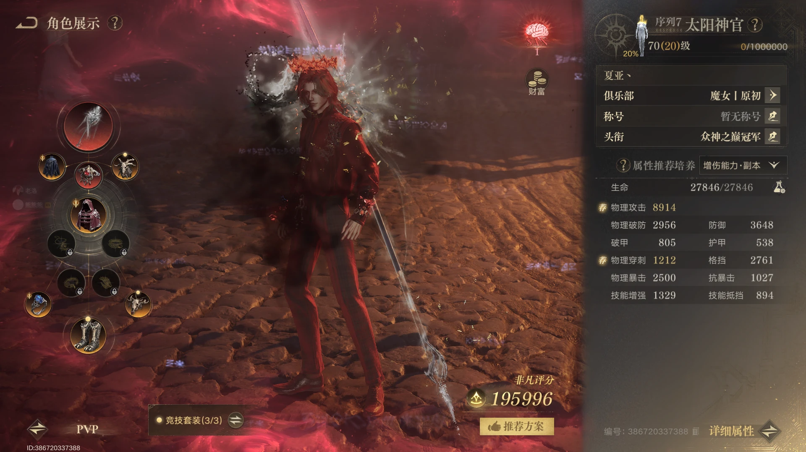
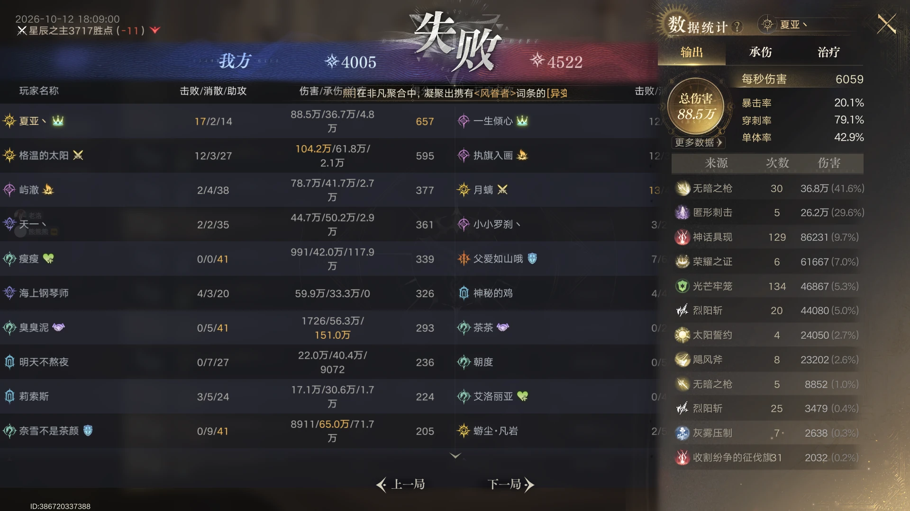
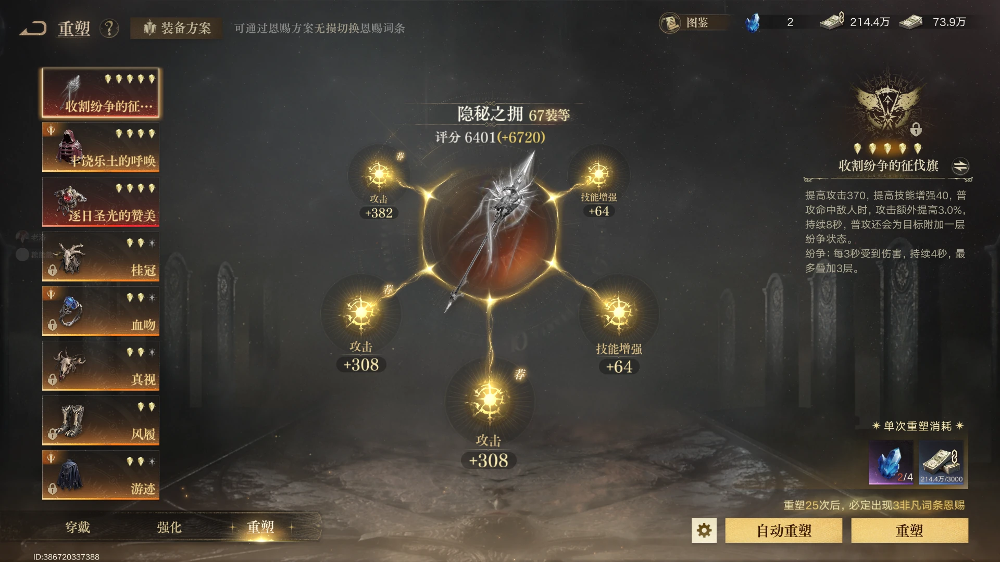
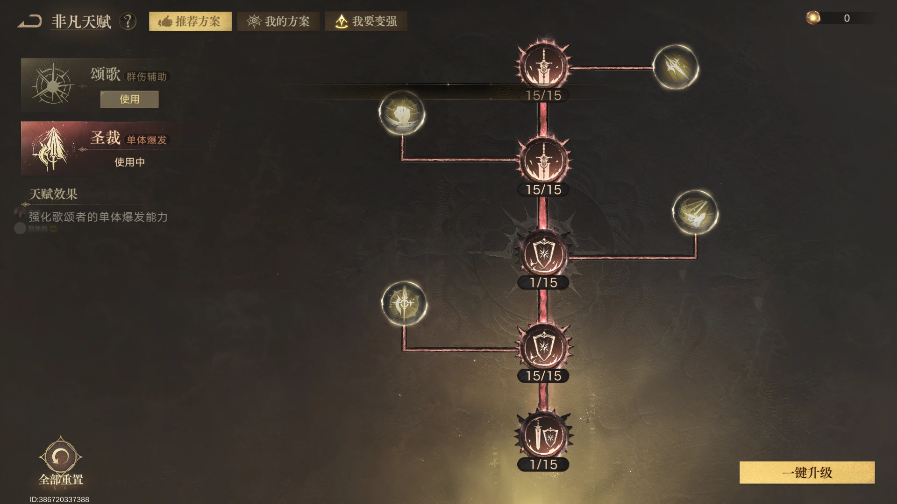
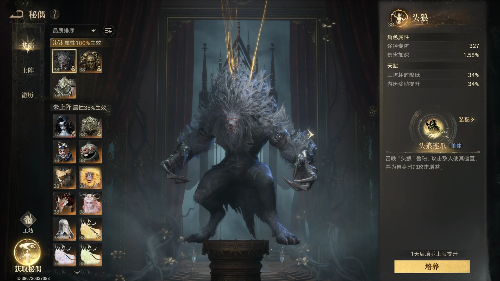

势力排名与单局战绩
先看势力战排名与单局结算，再回到属性、装备和技能轴；三张图分别对应策略页、输出页和一场实际对局。



战绩只作实战参考
截图用于展示这套构筑在当前 GVG 环境中的表现。实际结果会受队伍配置、目标选择、技能熟练度和局内状态影响，不应将单场数据理解为固定承诺。
属性：穿刺压到够用，暴击与攻击优先
沿用上一版本的属性思路，穿刺不必继续堆高；有三技强胸针时，约 1200 穿刺可以作为当前 12v12 大号的参考线。

穿刺只到当前够用档位
当前思路不是追求高穿刺，而是将穿刺压到够用的低档位。图中约 1200 穿刺用于 12v12 大号时，已经足够作为当前环境的参考。
三技强胸针是低穿刺方案的前提
这套低穿刺方案建立在三技强胸针的恩赐能够提供额外穿刺的基础上。没有该胸针时，需要通过自身词条补足穿刺，再评估是否能沿用同一档位。
剩余资源优先暴击与攻击
满足穿刺门槛后，剩余属性优先投入暴击和攻击，技能增强作为第三优先级。暴击和攻击可以持续堆叠；技能增强只拿对应部位能够稳定获得的词条，不必为了技强牺牲暴击或攻击。
装备：66 装等右侧三件套
装备以新开放的 66 装等右侧三件套为骨架，再接入 66 新独珍、64 独珍、红武和红胸针。

推荐装备组合
头盔、项链、鞋子使用 66 装等三件套；披风选择 66 新独珍；衣服和戒指继续使用 64 独珍；武器使用红武，胸针使用红胸针。
替换时先保证技能轴
这套组合优先服务攻击、暴击和技能循环。需要替换装备时，先保证核心技能轴能够稳定完成，再根据自身词条补齐穿刺。
技能组与输出手法：让刺击吃满 Buff
技能组围绕刺击构筑，所有 Buff 轴都服务于刺击；关键是先完成仪式阶段，再把增益和爆发技能按顺序交给主输出。

推荐技能顺序
先打一段仪式，等待二段仪式启动；随后按“仪式二段 → 圣光净化 → 皇冠 → 刺击 → 秩序 → 无暗”的顺序执行。
被动触发时延后刺击
如果被动即将触发，可以先保留刺击，等被动生效后再交主输出，让关键一击吃到更多增益。
先对齐技能轴，再追求释放数量
这套打法的重点是让全部 Buff 服务于刺击，而不是单纯追求技能释放数量。
非凡天赋：全攻击路线
非凡天赋以攻击为主，后续新增点数继续补攻击；穿刺只保留当前装备能够提供的够用值。

主点攻击相关节点
当前天赋优先选择攻击相关节点，后续有更多点数时继续补攻击。
不为天赋额外堆穿刺
在三技强胸针和当前装备组合能够满足穿刺门槛的前提下，不需要为了天赋再额外投入穿刺。
秘偶：固定头狼与剥面人
秘偶组合固定保留头狼和剥面人，第三个位置根据已有练度补伤害加深。

固定头狼和剥面人
当前推荐固定使用头狼和剥面人，先保证核心伤害收益稳定。
第三位置灵活补伤害加深
剩余位置选择能够提供伤害加深的秘偶即可，优先考虑自身练度和实际收益，不必为了追求固定名称牺牲可用性。